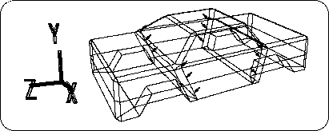
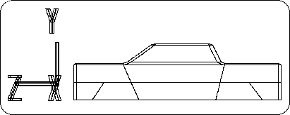
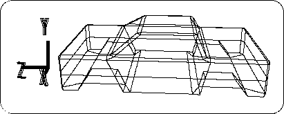
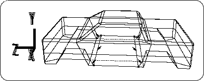
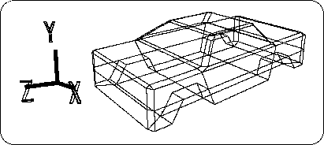

Return to previous page | Return to menu | Go to next page
Next, let's reduce polygons that seem unnecessary.
Now look at the figure below (Figure 3-60).

Replace the edge shown in Figure 3-60 with
[Mesh] → [Edge] → Right mouse button (Remove edge)
Use to erase (the number of erased lines is 12).
After erasing the line,
[Mesh] → [Vertex] → Mouse right button (Remove vertex)
Please erase the remaining points. The result is as shown below (Figures 3-61 and 3-62).


Caution
If you accidentally erase another line, do not redraw the line and do UNDO ( "U" key + left mouse button ).
Now, this change has created an edge that should be erased further. Please see the figure below (Figure 3-63).

First, erase the marked 6 edges.
[Mesh] → [Edge] → Right mouse button
Next, draw an edge at the dotted line.
[Mesh] → [Edge] → Left mouse button
The remaining points (4 points) are deleted.
[Mesh] → [Vertex] → Right mouse button
This reduced 4 polygons. The result is shown in the figure (Figure 3-64).
